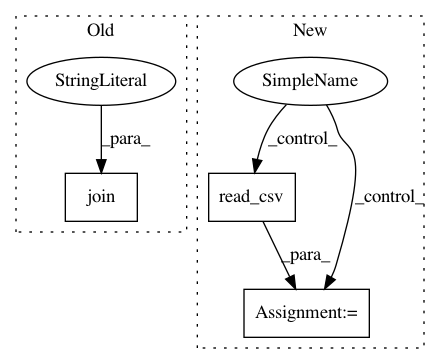

508078a326ad01638f825e560db8d4a369f5fb27,cde/empirical_evaluation/moments_time_series.py,,main,#,12
Before Change
print(moments_df)
// dump csv
dump_dir = os.path.join(DATA_DIR, "moments_time_series")
if not os.path.exists(dump_dir):
os.makedirs(dump_dir)
moments_df.to_csv(os.path.join(dump_dir, "moments_time_series.csv"))
After Change
def main():
if COMPUTE_MOMENTS:
// 1) load data
df = make_overall_eurostoxx_df()
X, Y, features = target_feature_split(df, "log_ret_1", filter_nan=True, return_features=True)
X, Y = np.array(X), np.array(Y)
ndim_x, ndim_y = X.shape[1], 1
// 2) Fite density model
mdn = MixtureDensityNetwork("mdn_empirical_no_pca", ndim_x, ndim_y, n_centers=20, n_training_epochs=10,
random_seed=22, x_noise_std=0.2, y_noise_std=0.1)
mdn.fit(X,Y)
// 3) estimate moments
n_samples = 10**7
print("compute mean")
mean = np.squeeze(mdn.mean_(x_cond=X, n_samples=n_samples))
print("compute cov")
cov = np.squeeze(mdn.covariance(x_cond=X, n_samples=n_samples))
print("compute skewness")
skew = mdn._skewness_mc(x_cond=X, n_samples=n_samples)
print("compute kurtosis")
kurt = mdn._kurtosis_mc(x_cond=X, n_samples=n_samples)
// 4) save data
data = np.stack([mean, cov, skew, kurt], axis=-1)
moments_df = pd.DataFrame(data=data, index=df.dropna().index, columns=["mean", "variance", "skewness", "kurtosis"])
print(moments_df)
// dump csv
if not os.path.exists(dump_dir):
os.makedirs(dump_dir)
moments_df.to_csv(dump_file_path)
else:
moments_df = pd.read_csv(dump_file_path, index_col=0)
/Ǜ) plot moment timeseries
fig, axes = plt.subplots(nrows=4, ncols=1, figsize=(15, 20))
In pattern: SUPERPATTERN
Frequency: 3
Non-data size: 3
Instances
Project Name: freelunchtheorem/Conditional_Density_Estimation
Commit Name: 508078a326ad01638f825e560db8d4a369f5fb27
Time: 2019-01-06
Author: jonas.rothfuss@gmx.de
File Name: cde/empirical_evaluation/moments_time_series.py
Class Name:
Method Name: main
Project Name: oddt/oddt
Commit Name: c9a8472f03e0a71b7a5a762e1f649aeadf80bcfb
Time: 2017-11-30
Author: marta-sd@users.noreply.github.com
File Name: tests/test_pandas.py
Class Name:
Method Name: test_csv
Project Name: dhlab-epfl/dhSegment
Commit Name: a4217c8986523a59dd9b764467fc21b29dd572ba
Time: 2018-08-31
Author: sofia.oliveiraares@epfl.ch
File Name: train.py
Class Name:
Method Name: run